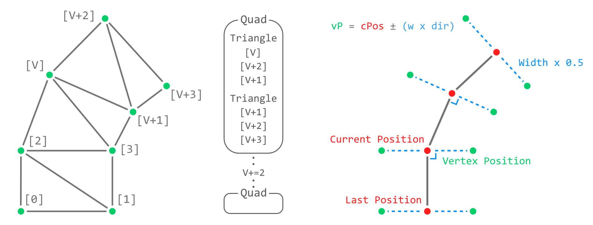
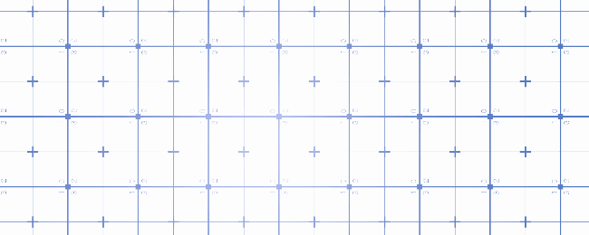
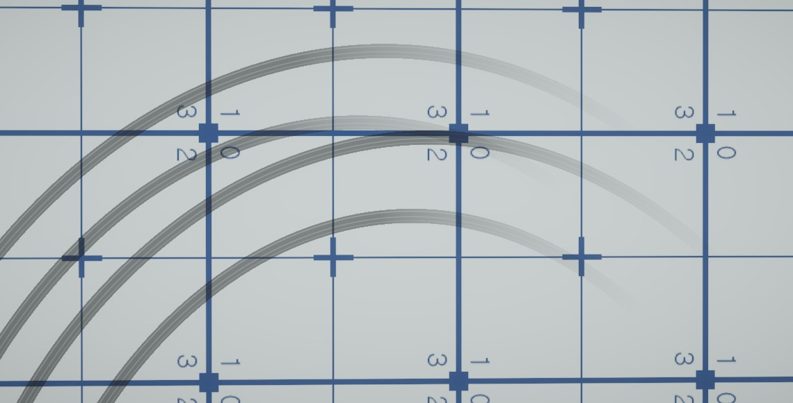

기존 unity에 포함되어 있는 trail renderer를 사용해 봤지만 제한적인
부분 때문에 직접 trail renderer를 제작하게 됐다. 가장 제한되는 부분은
차의 기울기가 생겼을 때 이미 기록된 trail도 똑같이 회전을 한다는
점이다. BakeMesh를 사용하여 Parent가 없는 오브젝트에서도 trail을
생성해 보았지만 동일하게 모든 trail이 회전되는 것을 보아 이미 렌더링
된 정점도 전부 다 업데이트되는 것으로 보인다.
새롭게 만든 trail 기능의 작동 원리는 드리프트를 감지하면 그 시점부터 각각의 바퀴가 움직인 거리를 측정하여 특정 거리 이상 움직이면 정점을 두 개씩 추가하게 된다. 두 개의 정점은 마지막 포지션을 기준으로 좌우에 배치하게 되는데 이것은 자동차가 움직이는 방향과 local up 방향으로부터 수직인 방향을 외적을 통해 구하면 된다. 생성된 trail은 시간이 지나면 비활성화된 상태로 list<GameObject>에 저장되며 필요에 따라 다시 재활용된다.
이 커스텀 trail renderer의 장점은 새롭게 추가된 두 개의 정점만 매번 list에 추가를 해서 이것을 array로 변형시킨 상태로 mesh에 정보를 전달했다. 이 방법으로는 이미 기록된 정점의 위치가 변하지 않는다. 또 다른 점은 trail마다 오브젝트로 생성되기 때문에 관리가 수월하다.

Quad 한 개의 사이즈가 작기 때문에 UV Stretch 기능을 만들었다. 생각보다
간단했는데 반복되길 원하는 quad의 수로 현재의 quad수를 나누어주면
된다. 위에는 1개의 quad마다 텍스쳐가 반복되고 아래는 10개마다
반복된다.

Trail이 드리프트 정도에 따라서 투명도가 달라지도록 만들었다. 기존에
투명도가 없던것보다 훨씬 더 자연스러운 모습을 보여준다. Vertex
color값을 활용하여 texture.a * vertexColor.a 값을 shader에서 출력하게
된다.
△